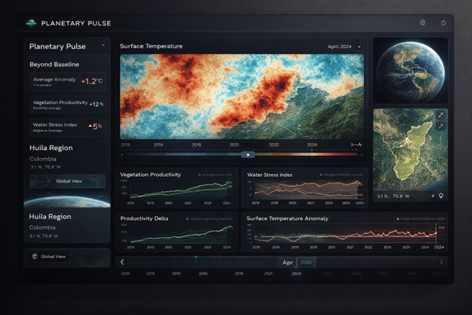
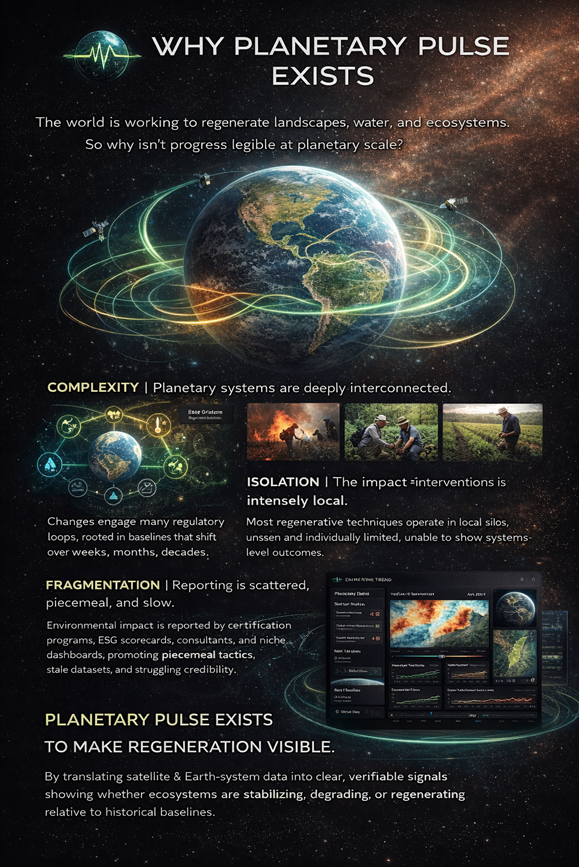

Future Plans
A visual snapshot of where Planetary Pulse is headed, plus project ideas we want to explore next.
Gallery

Explore Viewer Mockup
A preview of the full-fledged Explore experience: live metrics, temporal controls, and
comparison dashboards.

Poster Concept 1
Visual story for Planetary Pulse: Earth Metrics, regeneration, and planetary-scale clarity.

Poster Concept 2
Why Planetary Pulse exists: making regeneration visible at planetary scale.
Project Ideas
Time-Lapse Comparisons
Side-by-side timelines for any location, showing how Earth Metrics shift before and after intervention.
Baseline Matching
Automatic selection of comparable control regions to make regeneration impact measurable and credible.
Project Storylines
Narrative sequences that combine imagery, metrics, and field notes into a clear visual report.
Community Submissions
Lightweight intake for new projects with validation workflows and provenance tracking.